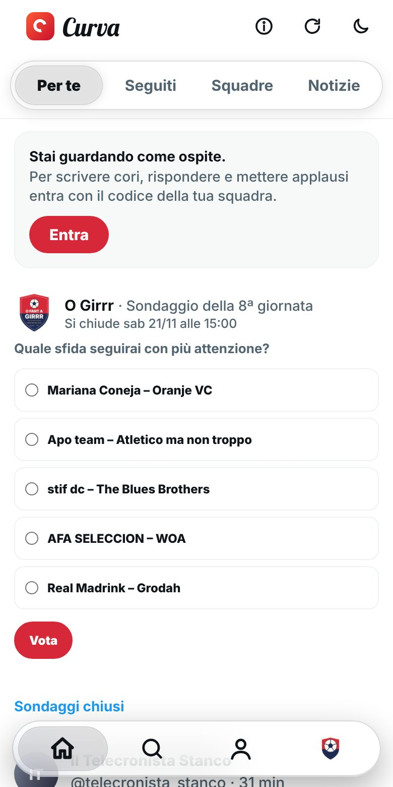

Nuovo
La Curva come su iPhone
Su iPhone e iPad la Curva prende lo stile di iOS: vetro, pillole e i movimenti morbidi delle app di Apple.
- Barra in basso a pillola che si rimpicciolisce scorrendo
- Cambio di scheda e ricarica con le molle di iOS
- Pagina ferma: si aggiornano solo i cori cambiati
Dove: Curva, su iPhone e iPad.